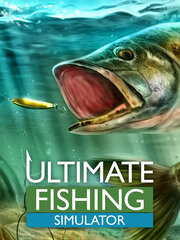

Ultimate Fishing Simulator
Ultimate Fishing Simulator
Detalles
|  | |
| Tiempo de juego | 3h 52m 0s |
| Última actividad | 04/01/2022 13:08:46 |
| Añadido | 19/03/2022 9:30:09 |
| Modificado | Nunca |
| Estado de finalización | Jugado |
| Librería | Steam |
| Fuente | Steam |
| Plataforma | PC (Windows) |
| Fecha de lanzamiento | 30/08/2018 |
| Puntuación de la Comunidad | 87 |
| Puntuación de la Crítica | 70 |
| Puntuación de usuario | |
| Género | Casual Simulation Sports |
| Desarrollador | Bit Golem |
| Editor | Ultimate Games S.A. |
| Característica | Achievements Cloud Saves Includes Level Editor Leaderboards Multi-Player Online Pvp Partial Controller Support Pvp Single Player Trading Cards |
| Enlaces | Punto de encuentro Discusiones Guías Noticias Página de la tienda PCGamingWiki Logros |
| Tag | |
Descripción
Ultimate Fishing Simulator 2
Follow & Add to Wishlist and don't miss a release!
https://store.steampowered.com/app/1136380
> NEW GAME FROM CREATORS OF ULTIMATE FISHING SIMULATOR!
Add to Wishlist and don't miss the release!
https://store.steampowered.com/app/1429620
VR EXPERIENCE
https://store.steampowered.com/app/1024010/
Feature List

- No micropayments - no need to worry about your wallet. You buy the game once and you play it as long as you like.
- The largest selection of fishing techniques from among all the games available on the market:
- Float fsihing – a classic fishing technique, ideal for beginners or those looking for calm and relaxation,
- Bottom fishing – bait feeders, groundbaits, rod pods, bite indicators - we have everything you need to catch a 50 kg carp,
- Spinning – the most popular fishing method in the world. Dozens of different baits, rods and reels
- Fly fishing – you can’t find fish? Look for rings on the surface of the water and for certain you’ll find some fish near them. Prepare a nymph and make a precession cast
- Sea fishing – get ready for extreme conditions and supernatural effort. Marlins are not as gentle as pikes or huchens. A unique fight and an unforgettable experience are waiting for you!
- Surfcasting – set up the pods, prepare the strongest braid that you have and cast the bait into the deep dark blue
- Ice fishing – grab an auger, find a suitable location and start drilling a hole!
- Float fsihing – a classic fishing technique, ideal for beginners or those looking for calm and relaxation,
- Powerful equipment in the game - rod pods, indicators, groundbaits, nymphs, streamers, feeders and much, much more!
- 7 realistic fisheries from around the world, 2 additional ones are available during the winter and in the open ocean.
- Levels of difficulty - Normal and Realistic
- Multiplayer game mode – meet players from around the world, exchange opinions and isights or challenge your rivals in tournaments. Prove who is the best in the world and climb in the official rankings.
- Camera with a view of the bait - i.e. an underwater camera that will allow you to observe the underwater life of fish and adjust the appropriate technique to the given conditions in the waters
- 24-hour day cycle! If you have not caught any fish during the day, try at night
- Dynamic weather – the weather is just as changeable and unpredictable as real life. Atmospheric phenomena such as temperature, mist, wind, rain and snow
- Tournaments - private / public / global. Do you want to play against your friends? Invite them to a game and run a private tournament. If you are looking for challenges, take part in global tournaments where you’ll face players from around the world.
- The possibility of touring lakes, rivers or ocean on boats, yachts and small speedboats
- The only fishing simulator in the world with advanced editor levels that will allow you to create your own dream map with your favorite fish
- Unique trophy room in which you can admire fish that you caught
- Licensed equipment by SAKURA (SERT S.A.S)
- The possibility of playing without an Internet connection (offline)*
About the Game
https://store.steampowered.com/app/1239320/Animal_Shelter/IMPORTANT: UFS VR owners can't play together with UFS VR DLC owners!
*** PLEASE CHECK THE SYSTEM REQUIREMENTS BEFORE YOU BUY THE GAME ***
Warning! In the Ultimate Fishing Simulator, the fish are biting like crazy. We guarantee that you’ll never fall asleep.
Ultimate Fishing Simulator is a comprehensive fishing simulator which allows using various techniques, in different places around the world and most importantly, you don’t need a permanent connection to the Internet for it.

If you are bored of waiting for fish to take and falling asleep in front of the computer, this means that you have played a bad game! In the Ultimate Fishing Simulator, this will never happen. Select the appropriate equipment and bait, cast your line and wait for a bite. Success is guaranteed.

In addition to traditional fishing techniques, in Ultimate Fishing Simulator you’ll also find a winter map where you will be able to go ice fishing! Buy an auger at the store, find a suitable location and drill an air hole. But not too small, so that you can remove the fish.

There are two modes of difficulties in the Ultimate Fishing Simulator, thanks to which there is something for everyone. Normal Mode allows you to enjoy the game in all its glory. In normal mode, all the features in the game are included. Realistic Mode requires more patience and efficiency from the player. Fish will be biting less and will fight longer. Some of the game features in this mode are disabled, such as the underwater camera.

Every fisherman likes to admire his trophies. Some release their fish, other stuff and hang them on their walls. In Ultimate Fishing Simulator you can exactly do the same! Decide what you want to do with the fish you catch. Sell? Release? Stuff? The choice is yours.

If the maps available in the game bore you, you can create your own. Be creative and build your own dream fishery that you can share other players thanks to the built-in level editor. Enjoy fishing with your friends on your favorite, family fishery. What more could you ask for?

Everybody likes to use brand-name equipment, which very often differentiates from the competition with its parameters and appearance. We are the only fishing game that has a license for SAKURA equipment (SERT S.A.S.). You will find in our game their rods, reels, baits, and lines. Each item has been mapped in detail and added to the game.

* connection to the Internet is required to play the game in multiplayer mode.